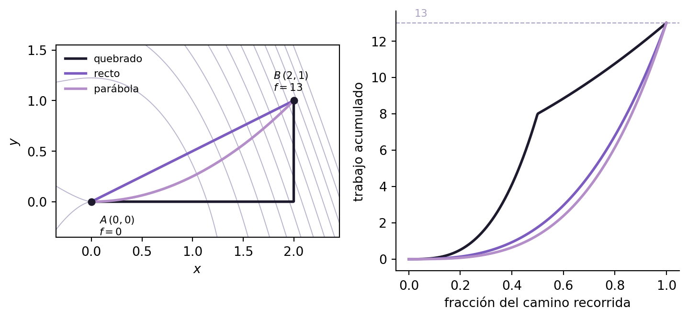

Notar cómo el \(x^2\) se canceló solo: esa cancelación es exactamente lo que garantiza el test del paso 2. Si hubiera sobrado un término con \(x\), el campo no sería conservativo y la ecuación para \(g'(y)\) no tendría sentido.
\[
f(x,y) = x^2 y + x^3 + y^2 + C
\]
2.4 Paso 5: verificación
\[
\nabla f = (2xy + 3x^2,\ x^2 + 2y) = \vec F \quad \checkmark
\]
2.5 Qué se ve en el dibujo
La Figura 2.1 muestra el relieve \(f\) como un mapa de colores, sus curvas de nivel, y encima las flechas del campo \(\vec F\).
Figura 2.1: Las flechas negras son el campo \(\vec F = \nabla f\); las curvas violetas son las curvas de nivel de \(f\). Las flechas cruzan las curvas de nivel perpendicularmente y apuntan hacia la zona más cálida, es decir hacia donde \(f\) crece. Donde las curvas se aprietan, el relieve es empinado y las flechas se hacen largas. En el origen hay un punto crítico: ahí \(\nabla f = \vec 0\) y las flechas se achican hasta desaparecer.
NotaUna corrección sobre el punto del origen
Es tentador llamarlo “punto de ensilladura”, pero no lo es. El hessiano de \(f\) es
con determinante \(0\): el criterio no decide, el punto es degenerado. Y mirando el relieve se ve por qué: sobre el eje \(y\) la función vale \(f(0,y) = y^2\), un mínimo; sobre el eje \(x\) vale \(f(x,0) = x^3\), que en el origen tiene un punto de inflexión, ni máximo ni mínimo.
La ensilladura de verdad de este campo está afuera del dibujo. Resolviendo \(\nabla f = \vec 0\): de \(x(2y + 3x) = 0\) y \(x^2 + 2y = 0\) salen los puntos \((0,0)\) y \((3, -\tfrac92)\), y en el segundo \(\det H = 9 \cdot 2 - 6^2 = -18 < 0\), ahí sí, ensilladura.
TipCómo leer un campo y sospechar si es conservativo
Si las flechas parecen “bajar de una loma y subir a otra” sin girar, hay relieve detrás: probablemente conservativo.
Si las flechas giran alrededor de un punto formando remolinos, hay rotor: no puede venir de ninguna altura.
Si cruzan perpendicularmente a una familia de curvas que se cierran sobre sí mismas, esas curvas son candidatas a curvas de nivel.
El dibujo sugiere, pero no demuestra. La cuenta \(P_y = Q_x\) es la que decide.
2.6 Independencia del camino
Calculemos el trabajo de \(\vec F\) desde \(A = (0,0)\) hasta \(B = (2,1)\) por tres caminos distintos.
Camino 1 (quebrado). Primero \((0,0) \to (2,0)\) con \(y = 0\), \(dy = 0\); después \((2,0) \to (2,1)\) con \(x = 2\), \(dx = 0\):
Tres parametrizaciones, tres integrales distintas, un solo resultado. Ese es todo el negocio del Teorema 1.1.
Ver el código de la figura
import numpy as npimport matplotlib.pyplot as pltVIOLETA, VIOLETA2, TINTA, GRIS ="#7c5cbf", "#b48ec8", "#1e1a2e", "#a99fc0"f =lambda x, y: x**2*y + x**3+ y**2xs = np.linspace(-0.35, 2.45, 300)ys = np.linspace(-0.35, 1.55, 300)X, Y = np.meshgrid(xs, ys)# los tres caminos, parametrizados en u de 0 a 1def quebrado(u): u = np.atleast_1d(u) x = np.where(u <.5, 4*u, 2.0) y = np.where(u <.5, 0.0, 2*u -1)return x, ycaminos = [ ("quebrado", quebrado, TINTA), ("recto", lambda u: (2*u, u), VIOLETA), ("parábola", lambda u: (2*u, u**2), VIOLETA2),]fig, (ax, ax2) = plt.subplots(1, 2, figsize=(7.6, 3.6))ax.contour(X, Y, f(X, Y), levels=np.arange(0, 18, 1.5), colors=GRIS, linewidths=.7, alpha=.8)for nombre, r, c in caminos: u = np.linspace(0, 1, 400) x, y = r(u) ax.plot(x, y, color=c, lw=2, label=nombre)ax.plot([0, 2], [0, 1], "o", color=TINTA, ms=5)ax.annotate("$A\\,(0,0)$\n$f=0$", (0, 0), textcoords="offset points", xytext=(6, -26), fontsize=8)ax.annotate("$B\\,(2,1)$\n$f=13$", (2, 1), textcoords="offset points", xytext=(-16, 8), fontsize=8)ax.set_xlabel("$x$"); ax.set_ylabel("$y$")ax.legend(fontsize=8, frameon=False, loc="upper left")ax.set_aspect("equal")u = np.linspace(0, 1, 400)for nombre, r, c in caminos: x, y = r(u) ax2.plot(u, f(x, y) - f(0, 0), color=c, lw=2, label=nombre)ax2.axhline(13, color=GRIS, lw=.8, ls="--")ax2.annotate("$13$", (0.02, 13), textcoords="offset points", xytext=(0, 5), fontsize=8, color=GRIS)ax2.set_xlabel("fracción del camino recorrida")ax2.set_ylabel("trabajo acumulado")ax2.spines[["top", "right"]].set_visible(False)fig.tight_layout()plt.show()

Figura 2.2: Izquierda: los tres caminos de \(A\) a \(B\) sobre las curvas de nivel de \(f\). Los tres atraviesan exactamente las mismas curvas de nivel entre \(A\) y \(B\), por eso acumulan el mismo trabajo. Derecha: el trabajo acumulado a medida que se recorre cada camino. Los recorridos son distintos —el quebrado se queda plano un rato y después sube de golpe— pero los tres llegan a \(13\).
En pantalla se puede deformar el camino con continuidad y ver que el número final no se mueve.
La familia de caminos es \(y = (x/2)^{\,p}\) con \(p = 2^{\text{forma}}\), que va de
\(A=(0,0)\) a \(B=(2,1)\) para cualquier \(p>0\). Con forma muy negativa el camino sube
primero y cruza después; con forma muy positiva se pega al eje \(x\) y sube al final:
son, aproximadamente, los dos caminos quebrados. El deslizador recorrido avanza sobre la
curva y el panel de la derecha va acumulando \(\int \vec F \cdot d\vec r\), calculado
numéricamente sobre la curva —sin usar el potencial—. Las curvas grises son el mismo cálculo
para otras formas. Todas terminan en 13.
En la figura de arriba, ¿por qué la curva gris del trabajo acumulado que corresponde a la forma más negativa arranca casi plana y sube de golpe al final?
Porque ese camino es más largo y tarda más en acumular.
Porque ese camino sube casi verticalmente primero, por una zona donde \(\vec F\) es casi perpendicular al movimiento, y recién al final avanza en \(x\) cruzando las curvas de nivel.
Porque el campo es más débil cerca del eje \(y\) y más fuerte cerca de \(B\).
Por un error de la integración numérica.
La correcta es la segunda. Con \(p\) chico el camino sube casi pegado al eje \(y\). Ahí \(\vec F(0,y) = (0,\ 2y)\), que sí tiene componente vertical, pero el ascenso ocurre a lo largo de curvas de nivel casi paralelas: se recorre poca diferencia de altura. Toda la diferencia de \(f\) se acumula en el tramo horizontal final, donde el camino corta las curvas de nivel casi perpendicularmente.
La lectura correcta es la de las curvas de nivel: el trabajo acumulado es cuántas curvas de nivel llevás cruzadas, no cuánto caminaste. Un tramo que corre a lo largo de una curva de nivel no aporta nada, por más largo que sea.
Con el mismo campo 2.1, ¿cuánto vale \(\oint_C \vec F \cdot d\vec r\) si \(C\) es el camino que va de \(A\) a \(B\) por la recta y vuelve de \(B\) a \(A\) por la parábola?
Cero. Es una curva cerrada y el campo es conservativo: \(13 - 13 = 0\). No hace falta calcular nada.
Este es el atajo que más se desaprovecha en los parciales: cuando la curva es cerrada y el campo pasó el test, la respuesta es \(0\) y se escribe sin integrar.